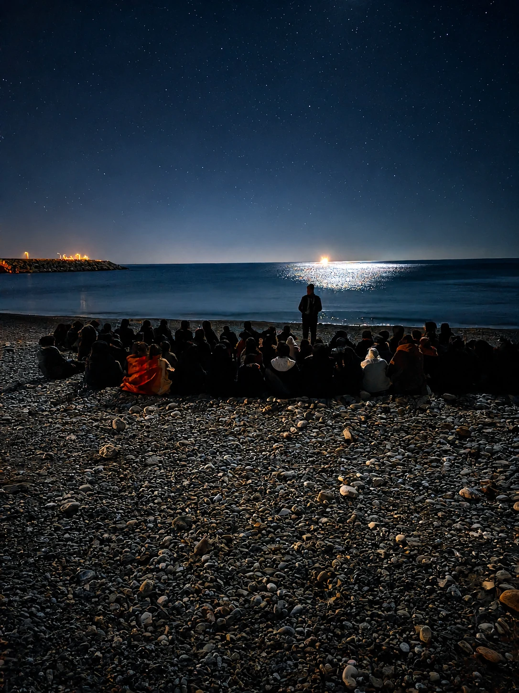
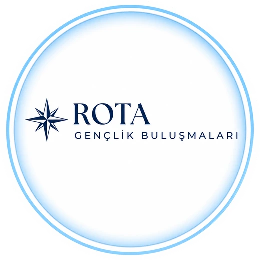
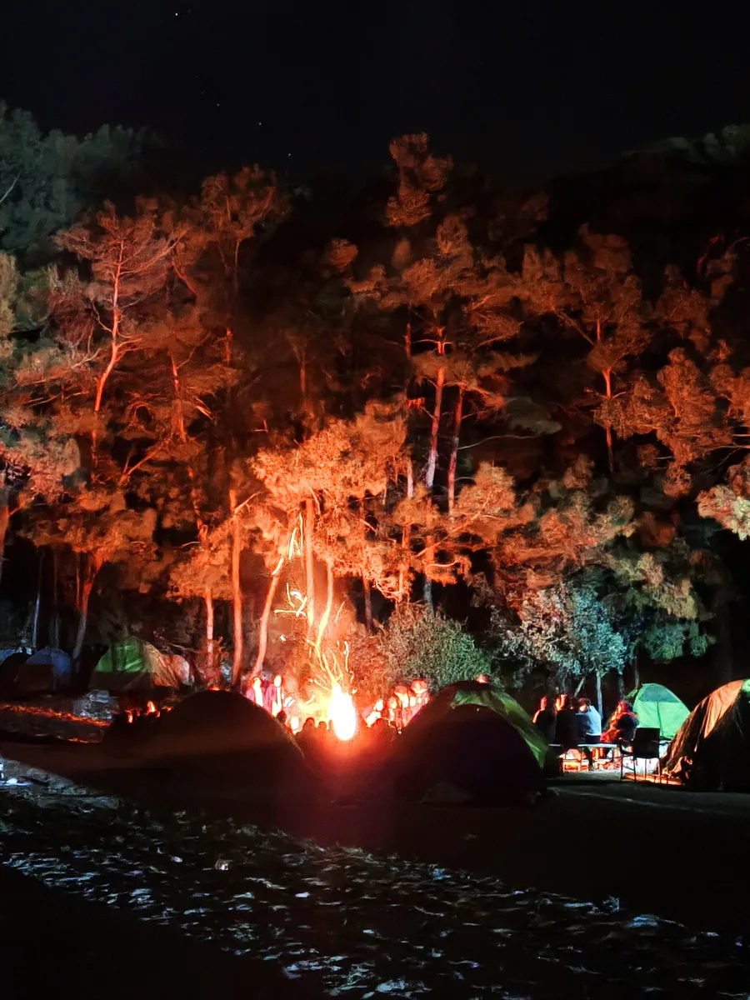
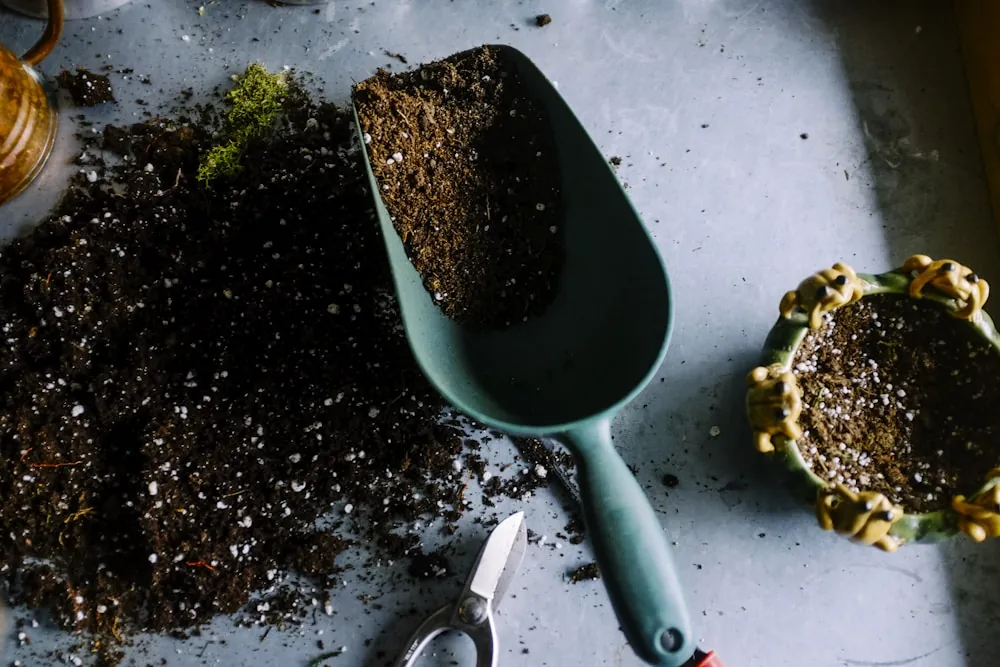

Yıllar boyunca izcilik mirasından devraldığımız disiplin, kardeşlik ve mücadele ruhunu bugün daha ileriye taşıyoruz. Dinamik Çalışmalar; gençleri sadece bugüne değil, daha büyük bir istikamete hazırlayan; iman, karakter ve sahanın birlikte yoğrulduğu bir yolculuktur.
Dinamik Çalışmalar, salt bir antrenman programı değil; bir nesil inşa etme sözüdür. İzcilik geleneğinden devraldığımız "ahde vefa"yı, sahanın teri ve kampın ateşiyle harmanlayan bir yolculuktur.
Burada güç, yalnız bilekte değil iradede aranır. Disiplin, dayatılan bir kural değil; gönüllüce kuşanılan bir edeptir. Karakter ise konuşmayla değil, zorluk anında alınan tavırla belli olur.
Gençleri sadece bugünün galibi değil, yarının emanet taşıyıcıları olarak yetiştiriyoruz. Çünkü bizim derdimiz madalya değil, istikamettir.

Çalışmalarımızın iskeletini kuran üç temel ilke. Her antrenman, her kamp, her karşılaşma; bu üçünün üzerine inşa edilir.
Her şeyin merkezinde inanç. Manevi dünyası güçlü olan bir gencin ayağı kayar ama yolu kaybolmaz. Önce kalbi yetiştiririz; gerisi gelir.
İzcilikten devraldığımız bu miras; saatinde, sözünde ve sahasında olmaktır. Disiplin bir kural değil, özgürlüğün ön koşuludur.
Bedeni güçlü, iradesi sağlam, sözü dürüst bir nesil. Salt fizik değil; karakterli ve şuurlu bir duruş, Dinamik Çalışmalar'ın asıl ürünüdür.
Aynı değerlerle, ayrı zarafetlerle yürüyen üç kardeş topluluk. Her biri kendi diliyle aynı sözü kuruyor: "İman. Disiplin. Karakter."
Sahanın terinden, kampın ateşine; bilek güreşinden gece nöbetine: bir gencin adam olma yolculuğu.
Erkek Çalışmalarına GitPusulamız vicdan, rehberimiz doğa. Kaşifler'den Maceracılar'a, 7'den 18'e doğada karakter inşa eden kız gönüllülerimizin evi.
Kız Çalışmalarına Git
Kaleiçi'nin kalbinde, Karatay Medresesi'nde: gençlerin kendi hayat rotasını çizdiği, her programda "+1 değer" kattığı bir gelişim ortamı.
Rota'ya GitAntrenman dört duvar arasında bitmez. Dinamik Çalışmalar, hayatın içinde olur: kampta, atölyede, ormanda, gönüllerde.

Doğanın içinde, gökyüzünün altında; birlik ruhunun pekiştiği geceler.
El emeği, göz nuru. Hem zanaatı hem sabrı öğreten çalışmalar.
Kardeşliğin masada, sözde, sohbette pekiştiği gençlik buluşmaları.

Bugün diktiğimiz fidan, yarın bir gencin gölgesi. Geleceği yeşertmek.
"Bir genci yetiştirmek; bir asrı kurmaktır. Bizim derdimiz bugünün galibi değil, yarına emanet bırakacak adamı yetiştirmektir."
Yaşın, sporun ya da geçmişin ne olursa olsun, istikametin doğruysa burada yer var. İlk adımı bugün at.